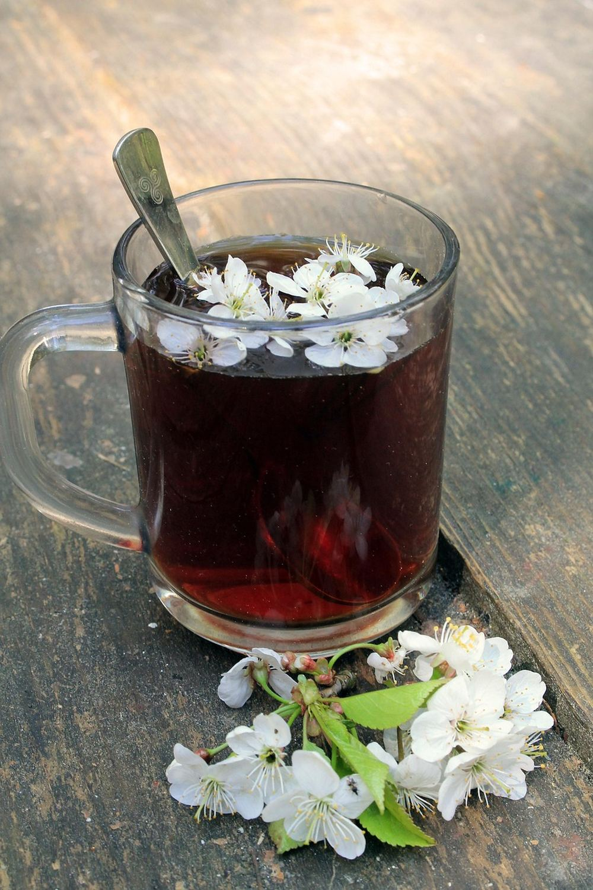

October 28, 2026 · By Pixel Punk Studio
Some people finish a word search in three minutes and wonder what the fuss is about. Others stare at the same grid for twenty minutes and give up with half the words missing. It is rarely about being "good" or "bad" at puzzles: the puzzle simply doesn't match the person holding it. A few things decide how hard a word search feels, and once you know them you can pick the right level for a child, a grandparent or yourself, and adjust any puzzle you already have.
What makes a word search easy or hard
- Letter size. Small, crowded letters make every puzzle harder, whatever the words. Large print and extra large print take the strain out of the search.
- Grid size. A small grid has fewer places to hide a word. Every extra row and column adds letters to scan.
- Number of words. Ten words is a quick puzzle; thirty words is an afternoon.
- Directions. Words that only run left to right and top to bottom are the easiest. Diagonals come next, and backwards words (right to left, bottom to top) are the real challenge.
- Word length. Long words stand out. Short words of three or four letters hide everywhere, especially when the grid repeats the same letters.
- The theme. Familiar words are found faster. A theme you love (Christmas, gardening, farm animals) makes even a big puzzle feel lighter.
Pick the right level for every solver
- Ages 4 to 6, early readers: a small grid, six to ten short words, across and down only, big letters. Picture clues help non-readers join in.
- Ages 7 to 10: a medium grid, ten to fifteen words, with some diagonals. Color-the-letters puzzles add a second activity once the words are found.
- Teens and adults: a full-page grid, twenty to thirty words, all eight directions.
- Seniors and anyone with tired eyes: choose by eyesight first, ability second. Large print with one puzzle per page suits most people; extra large (jumbo) print is the right choice for low vision, cataracts or anyone who removes their glasses to rest.
- Puzzle fans who find everything too easy: keep the large print for comfort, but add a challenge from the list below.
Too easy? 6 ways to make any word search harder
- Time yourself and try to beat your score on the next puzzle.
- Cover the word list. Read it once, fold it under, and find as many words as you can from memory.
- Find the words in order, or alphabetically, instead of the easy ones first.
- Backwards only. Look for the words that run right to left or bottom to top before the others.
- No circling. Find each word and write down the row and column of its first letter instead.
- Race a partner on two copies of the same puzzle.
Too hard? 6 ways to make it easier
- Hunt for the first letter. Scan for every "Q", "Z" or "X" in the grid: rare letters lead straight to their words.
- One direction at a time. Look only across, then only down, then the diagonals.
- Use a ruler or a card under each row so your eyes don't jump lines.
- Print it bigger. Printing at 120 to 130% or on larger paper makes a real difference (we explain how in our guide to word searches that are hard to read).
- Cross off as you go so you never look for the same word twice.
- Solve in pairs. One person reads the list, the other searches. It is also a lovely way to do puzzles with a grandchild or a grandparent.

Free word searches at three levels
Try our free printables below at three levels: an extra large print Christmas word search for tired eyes, a large print Christmas puzzle for adults, and a bug word search for kids aged 4 to 10. If one level fits, our books keep it going: Jumbo Christmas Word Search in extra large print, Cozy Christmas Word Search in large print, and Bug Hunt Word Search for young solvers.